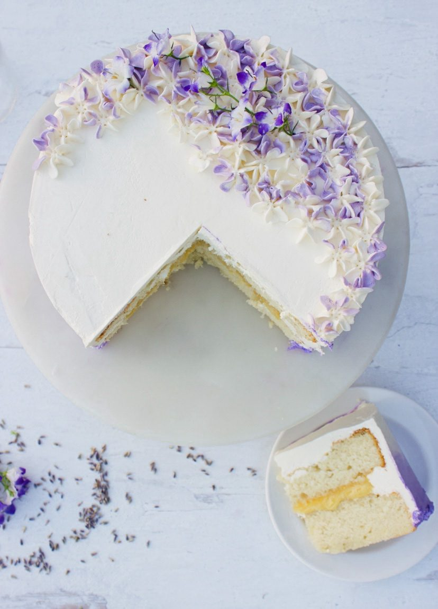

Lemon Lavender Cake

Description
Elegant floral and citrus cake with sugared decorations.
Ingredients
- 300g granulated sugar
- 3/4 tbsp dried lavender
- 175g plain flour
- 1/2 tsp baking powder
- 1/2 tsp baking soda
- 1/4 tsp salt
- 2 eggs
- 250g greek yogurt
- 125ml mild olive oil
- 1 lemon
Steps
- Heat the oven to 180°C/fan oven 160°C/mark 4. Put the sugar and lavender into a food processor and whizz until the lavender has broken down. Sift the flour, baking powder, baking soda and salt into a bowl. Add the lavender sugar. In a jug, mix together the eggs with the yogurt and oil.
- Make a well in the center of the dry ingredients and gradually pour in the wet ingredients, stirring as you go. Add the lemon zest and juice. Be careful not to over mix. Scrape into a base-lined and buttered cake tin, 20cm diameter and 6cm deep.
- Bake in the oven for 55 minutes, or until the cake is coming away from the sides of the tin and a skewer inserted into the middle comes out clean. Turn out the cake, peel off the paper and set on a wire rack to cool.
- For the icing, beat the egg white with a fork to break it down, then put half of it in another bowl. Mix the icing sugar with the remaining half egg white, beating until smooth. Add a squeeze of lemon juice. Spoon over the top of the cake, allowing the icing to drip down the sides.